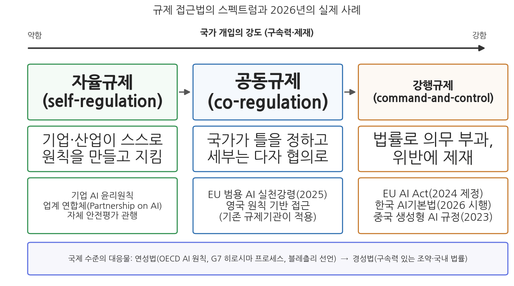
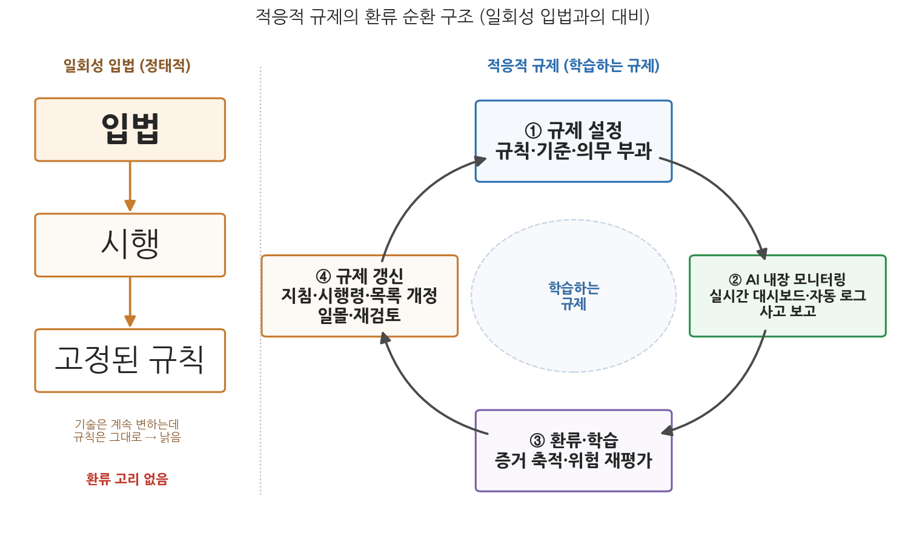

12주차 1차시. AI와 규제 (1): 왜, 어떻게 규제하는가
기술을 통제하려는 노력은 딜레마에 부딪힌다. 기술이 아직 어릴 때는 바꾸기 쉽지만 어떤 통제가 필요한지 알 수 없고, 문제가 드러날 만큼 기술이 자리 잡은 뒤에는 무엇을 바꿔야 하는지 알지만 바꾸기가 어렵고 비싸다. (데이비드 콜링리지, 『기술의 사회적 통제』, 1980, 요지)
이 장에서 배우는 것
2023년 3월, 세계의 이목을 끈 공개서한 한 장이 발표되었다. 미래의삶연구소(Future of Life Institute)가 주도한 이 서한은 "GPT-4보다 강력한 AI 시스템의 훈련을 최소 6개월간 중단하자"고 제안했고, 일론 머스크와 스티브 워즈니악을 비롯한 수천 명이 서명했다. 두 달 뒤에는 더 뜻밖의 장면이 이어졌다. 챗GPT를 만든 오픈AI의 최고경영자 샘 올트먼이 미국 상원 청문회에 나와, 자기 회사가 만드는 기술에 대한 "정부의 규제 개입이 매우 중요하다"고 말한 것이다. 기술을 만든 당사자들이 규제를 요청하는 이 역설적 장면은 하나의 질문을 던진다. 도대체 AI(인공지능)의 무엇이 문제이기에 규제해야 하며, 규제한다면 어떤 방식이어야 하는가.
이 질문은 낯설지 않다. 우리는 이미 여러 주에 걸쳐 그 재료를 모아 왔다. 3주차에서 본 알고리즘의 불투명성, 4주차의 책임 공백, 5주차의 편향과 차별, 7주차의 감시와 프라이버시 침해는 모두 "규제해야 할 이유"의 목록이기도 하다. 그리고 바로 앞 11주차에서 본 AI 거버넌스의 원칙들, 곧 OECD AI 원칙 같은 국제 규범은 "구속력 없는 약속이 어디까지 갈 수 있는가"라는 규제의 방법 문제를 예고했다. 이번 주는 그 논의를 규제라는 국가의 가장 고전적인 수단으로 좁힌다. 1차시인 이 장은 규제의 왜(정당화 논리)와 어떻게(접근법)를 이론적으로 정리하고, 2차시에서 EU AI Act(인공지능법)와 한국 AI기본법(인공지능 발전과 신뢰 기반 조성 등에 관한 기본법)이라는 실제 법을 해부한다. 구체적으로 다음을 배운다.
- AI 규제를 정당화하는 세 갈래 논리: 시장실패의 교정, 위험의 완화, 권리의 보호
- 규제를 반대하거나 경계하는 논리: 혁신 저해, 지정학적 경쟁, 규제의 실패 가능성
- 규제 접근법의 스펙트럼: 자율규제, 공동규제, 강행규제와 연성법·경성법의 구별
- 위험 기반 규제의 논리와 한계
- 혁신과 규제의 긴장을 다루는 장치: 콜링리지 딜레마, 규제 샌드박스, 그리고 적응적 규제와 그 기술적 실현인 AI 내장형 규제
이 장은 하나의 질문을 따라 전개된다. "AI를 왜 규제해야 하며, 어떤 방식의 규제가 정당하고 또 효과적인가?"
1.1 규제의 정당화 논리 세 갈래와 반대 논리를 함께 본다 → 1.2 자율규제에서 강행규제까지, 규제 접근법의 스펙트럼을 그린다 → 1.3 오늘날 AI 규제의 지배적 설계 원리인 위험 기반 규제의 논리와 한계를 따진다 → 1.4 혁신과 규제의 긴장을 다루는 장치들(규제 샌드박스, 적응적 규제)을 검토한다.
1.1 왜 규제하는가: 정당화의 세 갈래
규제란 무엇인가
규제라는 말부터 분명히 하자. 행정학과 행정법에서 규제는 감정 섞인 비난의 말("규제 공화국")도, 만능의 처방도 아니다. 우리 「행정규제기본법」 제2조는 행정규제를 "국가나 지방자치단체가 특정한 행정 목적을 실현하기 위하여 국민의 권리를 제한하거나 의무를 부과하는 것으로서 법령등이나 조례·규칙에 규정되는 사항"으로 정의한다. 핵심은 두 가지다. 첫째, 규제는 누군가의 자유를 제한하는 일이므로 반드시 정당화가 필요하다. 둘째, 규제는 법의 형식을 갖춘 국가 행위이므로, 뒤에서 볼 기업의 자발적 약속(자율규제)과는 구별된다.
규제는 국가가 공익 목적을 위해 개인과 기업의 행위를 제한하거나 의무를 부과하는 개입을 말한다. 규제 연구의 표준적 교과서(Baldwin, Cave & Lodge 2012)는 규제를 좁게는 "구속력 있는 규칙의 제정과 집행"으로, 넓게는 "행동에 영향을 미치려는 국가의 모든 개입"으로 정의한다. AI 규제 논의에서는 이 두 의미가 섞여 쓰이므로, 구속력 있는 법률(경성법)인지 자발적 원칙(연성법)인지를 항상 구별해서 읽어야 한다.
그렇다면 AI라는 기술에 대해 이 개입은 어떻게 정당화되는가. 11주차에서 본 것처럼 AI 규제 프레임워크들은 공정성, 투명성, 책임성, 안전, 프라이버시라는 공통 원칙 위에 서 있다. 그 원칙들의 배후에 있는 정당화 논리를 정리하면 세 갈래다.
첫째 갈래: 시장실패의 교정
규제경제학의 고전적 출발점은 시장실패(market failure)다. 시장이 스스로 바람직한 결과를 만들지 못할 때 국가 개입이 정당화된다는 논리인데, AI는 시장실패의 교과서적 유형들을 골고루 보여 준다.
먼저 정보비대칭이 있다. 3주차에서 본 블랙박스 문제를 떠올려 보자. AI 시스템의 품질과 위험을 아는 쪽은 개발자뿐이고, 그것을 사서 쓰는 기업·정부와 그 판정을 받는 시민은 시스템이 얼마나 정확하고 편향되었는지 알 길이 없다. 중고차 시장에서 살펴본 "레몬 시장"처럼, 품질 정보가 비대칭이면 시장은 좋은 제품을 골라내지 못한다. AI 규제의 단골 메뉴인 투명성 의무, 문서화 의무, 표시 의무는 모두 이 정보비대칭을 줄이려는 장치다.
다음으로 부정적 외부효과가 있다. AI 시스템의 오류와 편향이 낳는 비용은 개발사가 아니라 제3자가 치른다. 5주차에서 본 채용 알고리즘의 차별 피해는 지원자가, 6주차에서 본 허위정보의 비용은 사회 전체가 부담한다. 비용을 치르지 않는 생산자는 안전과 공정성에 과소 투자할 유인을 갖는다. 안전성 검증 의무나 사고 보고 의무는 이 외부효과를 생산자에게 되돌리는(내부화하는) 장치다.
마지막으로 AI 안전이라는 공공재의 문제가 있다. 안전 기준, 평가 방법, 감사 인프라는 누구나 혜택을 보지만 개별 기업이 먼저 만들 유인은 약하다. 국가가 표준을 만들고 평가 체계를 구축하는 것은 공공재 공급의 논리로 정당화된다.
둘째 갈래: 위험의 완화
두 번째 갈래는 시장의 실패보다 피해의 크기와 회복 불가능성에 주목한다. 원자력, 화학물질, 항공, 의약품 규제가 그렇듯이, 일단 사고가 나면 사후 배상으로 회복할 수 없는 피해가 예상될 때 국가는 사전 예방적으로 개입한다. AI에서 이 논리는 두 층위로 나타난다. 하나는 개별적 위험이다. 의료 진단 AI의 오진, 자율주행의 사고, 전력망 제어 시스템의 오작동처럼 생명·신체에 직결되는 위험이다. 다른 하나는 구조적·사회적 위험이다. 감시 인프라의 확산, 선거를 흔드는 허위정보, 그리고 최첨단 범용 모델이 제기할 수 있는 대규모 오용 가능성처럼 사회 시스템 전체에 걸친 위험이다. 사회학자 울리히 벡(Ulrich Beck)이 『위험사회』(1986)에서 지적했듯이, 현대의 위험은 산출물의 풍요와 함께 생산되며 사후적 배상의 논리로는 다룰 수 없다. 뒤에서 볼 위험 기반 규제는 바로 이 갈래의 논리를 규제 설계의 원리로 승격시킨 것이다.
셋째 갈래: 권리의 보호
세 번째 갈래는 경제학이 아니라 헌법의 언어로 말한다. AI가 침해할 수 있는 것은 후생(welfare)만이 아니라 권리(rights)라는 것이다. 차별받지 않을 권리, 사생활의 비밀, 개인정보자기결정권, 적법절차를 요구할 권리는 시장이 효율적으로 작동하더라도 침해될 수 있고, 침해되면 돈으로 회복되지 않는다. 이 갈래는 특히 EU 접근의 뼈대다. 2차시에서 보겠지만 EU AI Act는 "기본권 보호"를 법의 목적 조항에 명시하고, 인간의 존엄성과 민주주의 같은 기본 가치를 침해하는 AI는 위험 계산 없이 아예 금지한다. 편익이 비용보다 크더라도 해서는 안 되는 일이 있다는 논리, 곧 권리는 거래의 대상이 아니라는 논리다.
세 갈래는 서로 배타적이지 않고 실제 법에는 섞여 들어간다. 그러나 어느 갈래를 앞세우느냐에 따라 규제의 모양이 달라진다. 시장실패 논리를 앞세우면 정보 공개와 비용편익분석 중심의 가벼운 규제로, 위험 논리를 앞세우면 사전 평가와 인증 중심의 규제로, 권리 논리를 앞세우면 금지와 권리구제 중심의 규제로 기운다. 2차시에서 볼 EU(권리·위험 중심)와 미국(시장·혁신 중심)의 차이는 상당 부분 이 정당화 논리의 차이다.
반대편의 논리: 규제를 경계하는 세 가지 이유
정당화 논리가 있다고 규제가 자동으로 옳아지는 것은 아니다. 규제에는 언제나 반대편의 논리가 있고, AI 규제 반대론은 크게 세 흐름이다.
첫째, 업계의 저항이다. 규제 준수 비용이 혁신을 질식시키고, 특히 대기업보다 스타트업에 불리하게 작용한다는 우려다. 문서화, 평가, 인증에 드는 고정비용은 기업 규모와 무관하게 발생하므로, 역설적으로 비용을 감당할 수 있는 빅테크의 시장 지배를 굳힐 수 있다(이를 규제가 기존 강자의 해자가 된다고 표현한다). 둘째, 국가 간 경쟁의 논리다. AI가 국력과 안보의 문제가 된 상황에서, 자국만 엄격하게 규제하면 기술 주도권을 경쟁국에 내준다는 지정학적 우려다. 미국의 대중국 반도체 수출통제에서 보듯 AI를 둘러싼 강대국 경쟁은 규제 논의에 그대로 스며든다. 셋째, 규제의 실패 가능성이다. 정부가 빠르게 변하는 기술을 이해하지 못한 채 만든 규제는 표적을 빗나가고, 규제기관이 피규제 산업의 논리에 동화되는 규제 포획(regulatory capture)의 위험도 있다.
주의할 점은, 시민사회의 비판이 규제 "반대"와는 결이 다르다는 것이다. 시민사회는 대체로 더 강한 규제를 요구하며, 정부가 내놓은 규제안이 불충분하다고 비판한다. 그런데 이 비판이 업계의 반대와 맞물리면 법안 자체가 좌초하여 역설적으로 규제 공백이 길어지기도 한다. 아래 캐나다의 사례가 그 전형이다.
캐나다 정부는 2022년 6월 개인정보보호 개편과 인공지능·데이터법(AIDA, Artificial Intelligence and Data Act)을 묶은 법안 C-27을 연방의회에 제출했다. G7 국가 중 이른 편에 속하는 포괄적 AI 입법 시도였다. 그러나 심의는 3년 가까이 표류했다. 업계는 "고영향 AI"의 정의가 모호하고 준수 부담이 크다고 반대했고, 시민사회와 학계는 반대로 핵심 내용을 정부 시행규칙에 백지위임했다며 보호가 불충분하다고 비판했다. 야당은 AI 부분을 분리 심의하자고 요구했다. 결국 2025년 1월 트뤼도 총리 사임 발표와 함께 의회가 정회(prorogation)되면서 C-27은 처리되지 못한 채 자동 폐기되었다. 캐나다는 10주차에서 본 자동화 의사결정 지침(공공부문 알고리즘 영향평가)을 갖고 있지만, 민간을 포괄하는 AI 법률은 2026년 현재도 없다.
이 사례가 보여 주는 것은 규제의 정당화 논리가 아무리 탄탄해도 규제는 결국 정치의 산물이라는 점이다. 찬성 연합과 반대 연합이 갈라지고, 입법의 시간표가 선거와 의회 일정에 얽매이는 동안 기술은 계속 나아간다. "규제를 하느냐 마느냐"만큼이나 "어떤 방식의 규제라면 합의가 가능한가"가 중요한 이유이며, 그것이 다음 절의 주제다.
1.2 어떻게 규제하는가: 자율규제에서 강행규제까지
스펙트럼으로 보는 규제 접근법
규제는 전부 아니면 전무가 아니다. 국가 개입의 강도에 따라 규제 접근법은 하나의 스펙트럼 위에 놓인다. 왼쪽 끝이 자율규제, 오른쪽 끝이 강행규제, 그 사이가 공동규제다.
자율규제(self-regulation)는 기업이나 산업이 스스로 원칙과 행동강령을 만들고 스스로 지키는 방식이다. 2016년 출범한 'Partnership on AI' 같은 업계 연합체, 각 기업이 발표한 AI 윤리 원칙, 모델 출시 전 자체 안전 평가 관행이 여기에 속한다. 장점은 분명하다. 기술을 가장 잘 아는 당사자가 규칙을 만들므로 전문성이 높고, 기술 변화에 빠르게 적응하며, 입법 비용이 들지 않는다. 그러나 약점도 그만큼 분명하다. 지키지 않아도 제재가 없고, 원칙의 내용을 이해당사자가 정하므로 느슨해지기 쉬우며, 경쟁 압력이 커지면 가장 먼저 버려진다. 실제로 산업 자율규제 연구(Gunningham & Rees 1997)는 자율규제가 작동하는 조건으로 산업 내부의 동질성, 위반을 감시할 수 있는 가시성, 그리고 배후에 있는 국가 개입의 위협을 꼽는데, AI 산업은 셋 모두 취약하다.
강행규제(command-and-control regulation)는 반대쪽 끝이다. 국가가 법률로 의무를 부과하고 위반에 제재를 가한다. 금지, 인허가, 인증, 과징금이 대표적 수단이다. 구속력과 집행력이 있고 민주적 정당성(의회 입법)을 갖추지만, 제정에 오랜 시간이 걸리고 한번 만들면 고치기 어려우며, 기술을 뒤쫓다 빗나갈 위험이 크다. 2차시에서 볼 EU AI Act와 한국 AI기본법이 이 유형이고, 중국의 국가 주도 규제는 강행규제에 사회 통제 목적이 결합된 변형이다.
공동규제(co-regulation)는 그 사이에 있다. 국가가 법률로 목표와 큰 틀을 정하되, 구체적 기준의 작성과 이행은 산업·표준기구·시민사회가 참여해 채우는 방식이다. 규제 이론에서 이 중간 지대의 고전은 에어스와 브레이스웨이트(Ayres & Braithwaite 1992)의 대응적 규제(responsive regulation)다. 이들은 규제를 집행 피라미드로 그렸다. 맨 아래층에서는 설득과 자율적 준수에 맡기고, 위반이 반복될수록 경고, 과징금, 인허가 정지로 단계적으로 개입을 높인다. 국가의 강제력은 늘 쓰는 수단이 아니라 배후에 세워 둔 "큰 몽둥이"로서, 그 존재가 자율의 성실성을 담보한다는 발상이다. 오늘날 AI 규제의 실무 장치들, 예컨대 법률(강행) 아래에 실천강령(자율)을 두고 그 이행을 당국이 승인·감독(공동)하는 구조는 이 이론의 응용이다.

그림 12-1을 읽는 법은 이렇다. 가로축은 국가 개입의 강도이며 왼쪽에서 오른쪽으로 갈수록 구속력과 제재가 강해진다. 위 줄의 세 상자가 세 접근법이고, 아래 줄은 각 접근법의 대표적 실제 사례를 2026년 기준으로 배치한 것이다. 이 그림에서 알 수 있는 것은 두 가지다. 첫째, 주요국의 AI 규제는 하나의 정답에 수렴하지 않고 스펙트럼 전체에 흩어져 있다. 둘째, 한 나라 안에서도 여러 접근이 섞인다. EU조차 강행규제(AI Act) 옆에 공동규제(범용 AI 실천강령)와 자율규제(저위험 행동강령)를 함께 두고 있다.
연성법과 경성법: 국제 무대의 규제 스펙트럼
같은 스펙트럼이 국제 수준에서는 연성법(soft law)과 경성법(hard law)의 구별로 나타난다. 연성법은 법적 구속력 없이 행동의 표준을 제시하는 규범이다. 11주차에서 본 국제 AI 거버넌스의 성과물 대부분이 여기에 속한다. 2019년 채택되고 2024년 5월 개정된 OECD AI 원칙은 포용적 성장, 인권, 투명성, 견고성, 책임성을 축으로 47개국의 지지를 얻었고, 2023년의 G7 히로시마 AI 프로세스와 같은 해 11월 28개국과 EU가 서명한 블레츨리(Bletchley) 선언은 첨단 AI의 안전에 대한 국제 합의를 처음으로 문서화했다.
연성법의 힘은 과소평가할 수 없다. 공통의 언어와 원칙을 만들고, 각국 입법의 참조점이 되며, 아직 합의가 무르익지 않은 영역에서 최소한의 조율을 가능하게 한다. 실제로 EU AI Act와 한국 AI기본법의 원칙 조항들은 OECD 원칙의 어휘를 거의 그대로 쓴다. 그러나 한계도 뚜렷하다. 지키지 않아도 제재가 없으므로, 국가 이익과 지정학적 경쟁이 걸린 사안에서는 쉽게 밀려난다. 원칙에는 합의하지만 집행에는 각자도생하는 것, 이것이 2026년 현재 글로벌 AI 규제의 풍경이며, 각국의 서로 다른 법제가 만드는 "파편화된 규제 모자이크"는 다국적으로 개발·배포되는 AI에 대한 국제적 조화라는 숙제를 남긴다.
EU AI Act는 범용 AI(GPAI) 모델 제공자의 의무를 법률에 규정하되, 그 구체적 이행 방법은 실천강령(Code of Practice)으로 채우도록 설계했다. EU 집행위원회 AI사무국(AI Office)의 주관 아래 모델 개발사, 학계, 시민사회 대표 수백 명이 참여한 초안 작업을 거쳐 2025년 7월 최종 실천강령이 공개되었다. 투명성, 저작권, 안전·보안의 세 장으로 구성된 이 강령에 서명한 기업은 법정 의무의 준수를 입증하는 부담을 덜 수 있다. 오픈AI, 앤스로픽, 구글, 마이크로소프트 등 주요 개발사가 서명했지만, 메타는 "유럽이 잘못된 길로 가고 있다"며 서명을 거부했다. 법률이 틀을 정하고 세부를 다자 협의로 채우며 서명 여부를 기업이 선택하는 이 구조는, 강행규제의 몸통에 공동규제의 팔다리를 단 대표적 실험이다.
이 사례가 보여 주는 것은 규제 접근법들이 대체재가 아니라 보완재로 조립된다는 점이다. 순수한 자율규제만으로는 담보가 없고 순수한 강행규제만으로는 세부를 채울 전문성과 속도가 없으므로, 현실의 AI 규제는 스펙트럼 위의 여러 지점을 조합한 하이브리드로 만들어진다. 동시에 메타의 서명 거부는 공동규제의 아킬레스건도 보여 준다. 참여가 선택인 한, 가장 규제가 필요한 행위자가 가장 먼저 빠져나갈 수 있다.
어느 접근이 옳은가를 결정하는 요인들
그렇다면 스펙트럼 위에서 어디에 설 것인가. 교과서적 답은 "위험이 크고 신뢰가 낮을수록 오른쪽(강행)으로, 불확실성이 크고 기술 변화가 빠를수록 왼쪽(자율·공동)으로"다. 그러나 현실의 선택은 각국의 법 전통, 산업 이해, 정치 체제가 함께 결정한다. 강한 기본권 전통과 선례(GDPR)를 가진 EU는 강행규제로, 연방·주로 권한이 쪼개지고 소송 중심 법문화를 가진 미국은 분산된 접근으로, 기술 추격이 국가 목표인 일본은 진흥 중심의 가벼운 접근으로 기울었다. 규제 접근법의 선택은 기술적 판단이기 이전에 그 사회가 무엇을 두려워하고 무엇을 열망하는지의 표현이다. 이 비교는 2차시에서 본격적으로 다룬다.
1.3 위험 기반 규제: 오늘날의 지배적 설계 원리
왜 위험인가
접근법의 큰 방향을 정했다면, 다음 질문은 규제의 강도를 무엇에 비례시킬 것인가다. 2026년 현재 세계 AI 규제의 지배적인 답은 위험(risk)이다. EU AI Act는 위험 4단계에 따라 의무를 차등화하고, 한국 AI기본법은 "고영향 인공지능"이라는 범주를 세워 그에 집중하며, 미국 연방정부의 AI 관리 지침도 "영향력이 큰(high-impact) AI"를 따로 정의해 최소 위험관리 관행을 요구한다. 서로 다른 법제가 위험 기반이라는 설계 원리에서만큼은 수렴하고 있는 것이다.
위험 기반 규제(risk-based regulation)의 논리는 규제학자 줄리아 블랙(Julia Black)이 정리했듯이 자원 배분의 논리다. 규제기관의 인력과 예산은 유한하므로, 모든 대상을 똑같이 감독하는 대신 위험이 큰 곳에 감독을 집중하고 위험이 작은 곳은 가볍게 지나간다. 위험은 통상 피해의 발생 가능성과 피해의 크기의 곱으로 이해된다. 이 원리를 AI에 적용하면 규제의 단위가 기술이 아니라 용도가 된다. 같은 얼굴인식 기술이라도 스마트폰 잠금 해제에 쓰이면 저위험이고, 수사기관의 실시간 감시에 쓰이면 고위험이거나 금지 대상이다. 기술 자체를 금지하거나 방치하는 양자택일을 피하면서, 규제 강도를 맥락에 비례시키는 것이다.
세 가지 이유가 겹친다. 첫째, 실용적 이유다. AI처럼 응용 범위가 무한한 범용 기술은 품목별 규제(의약품처럼 하나하나 승인)도 일괄 규제(전면 금지나 전면 허용)도 불가능하므로, 용도별 위험으로 등급을 매기는 것이 거의 유일한 분류법이다. 둘째, 정치적 이유다. 위험 기반 접근은 "혁신은 살리고 위험만 잡는다"는 서사를 제공하여 규제 찬성 연합과 반대 연합 사이의 타협점이 되어 준다. 셋째, 제도적 유산이다. 금융감독, 식품안전, 화학물질 관리 등에서 수십 년간 축적된 위험 기반 감독의 기법과 언어가 이미 존재했고, 10주차에서 본 영향평가 제도가 위험을 측정하는 행정 기술을 제공했다. 위험 기반 규제는 발명된 것이 아니라 이식된 것이다.
위험 기반 규제의 한계
그러나 위험 기반 규제는 만능이 아니며, 그 한계는 이미 실제 법제의 운영에서 드러나고 있다.
첫째, 분류의 자의성이다. 무엇이 고위험인지는 자연이 정해 주지 않는다. 같은 채용 알고리즘이 EU에서는 고위험 목록에 오르지만 다른 나라에서는 아무 목록에도 없다. 분류는 결국 정치적 협상의 산물이고, 목록에 들어가느냐를 둘러싼 로비의 표적이 된다. 둘째, 경계 사례와 회피의 문제다. 위험 등급이 의무의 낙차를 만들면, 사업자는 자신의 시스템을 낮은 등급으로 해석할 유인을 갖는다. 셋째, 사전 분류의 경직성이다. 위험은 배포 이후의 사용 맥락에서 발생하고 변하는데, 등급은 배포 이전에 확정된다. 생성형 AI의 등장은 이 한계를 극적으로 드러냈다. 특정 용도가 없는 범용 모델은 용도 기반 위험 분류에 들어맞지 않았고, EU는 입법 막바지에 범용 AI 조항을 서둘러 추가해야 했다. 넷째, 위험으로 환원되지 않는 가치의 문제다. 민주주의의 침식이나 인간 존엄처럼 확률과 크기로 계산하기 어려운 피해는 위험 언어에 잘 담기지 않는다. EU가 위험 계산과 무관한 절대적 금지 목록을 따로 둔 것은 이 한계에 대한 응답으로 읽을 수 있다.
요컨대 위험 기반 규제는 유한한 규제 자원으로 무한한 응용을 다루기 위한 차선의 설계 원리이며, 그 성패는 등급 분류의 정당성과 갱신 능력에 달려 있다. 2차시에서 EU와 한국이 이 원리를 각각 어떻게 법조문으로 옮겼는지 확인하게 될 것이다.
1.4 혁신과 규제의 긴장: 딜레마와 장치들
콜링리지 딜레마와 속도의 문제
장 첫머리의 인용구로 돌아가자. 기술철학자 데이비드 콜링리지(David Collingridge)가 1980년에 정식화한 이 딜레마는 AI 규제 논쟁의 뼈대를 이룬다. 기술의 초기에는 통제하기 쉽지만 무엇을 통제해야 할지 모르고(정보의 문제), 기술이 성숙하면 무엇이 문제인지 알지만 이미 사회에 깊이 박혀 통제하기 어렵다(권력의 문제). 너무 이른 규제는 표적을 모른 채 혁신을 막고, 너무 늦은 규제는 기득 구조에 막혀 집행되지 않는다.
여기에 속도의 비대칭이 겹친다. 법학자들이 보조 맞추기 문제(pacing problem)라 부르는 현상으로(Marchant, Allenby & Herkert 2011), 기술은 월 단위로 변하는데 입법은 연 단위, 국제 합의는 10년 단위로 움직인다. EU AI Act가 그 생생한 예다. 2021년 4월 초안이 나온 뒤 챗GPT의 등장으로 협상이 뒤집혔고, 2024년 제정된 법의 일부 조항은 2026년 현재 시행되기도 전에 개정 절차를 밟았다(2차시에서 상세히 본다). 법이 완성되는 속도보다 규제 대상이 변하는 속도가 빠른 것이다.
이 긴장은 국가 간 경쟁으로 증폭된다. 한쪽에는 브뤼셀 효과(Brussels effect)의 기대가 있다. 법학자 아누 브래드퍼드(Anu Bradford 2020)가 정식화한 이 개념은, 거대한 EU 시장에 접근하려는 글로벌 기업들이 EU 기준을 세계 표준으로 받아들이게 되는 현상을 가리킨다. GDPR이 세계 개인정보보호법의 표준이 된 것처럼, 먼저 규제하는 자가 규칙을 쓴다는 논리다. 다른 쪽에는 규제 후퇴(regulatory rollback)의 압력이 있다. 엄격한 규제가 투자와 인재를 밀어내 자국 산업의 경쟁력을 갉아먹는다는 우려가 커지면, 앞서 만든 규제를 되물리자는 압력이 정치를 움직인다. 2026년의 세계는 이 두 힘이 실시간으로 겨루는 실험장이며, EU가 자신의 AI Act 일부 시행을 연기한 것은 규제 후퇴 압력이 브뤼셀 효과의 본산에서조차 작동함을 보여 준다.
긴장을 다루는 장치 1: 규제 샌드박스
이 긴장을 제도 안에서 다루려는 대표적 장치가 규제 샌드박스(regulatory sandbox)다. 어린이가 모래밭에서 안전하게 놀듯이, 혁신 사업자가 제한된 범위(기간, 지역, 이용자 수)에서 기존 규제의 적용을 유예받고 신기술·신서비스를 실험하도록 허용하되, 감독당국이 그 과정을 지켜보며 데이터를 얻는 제도다. 규제자에게는 콜링리지 딜레마의 정보 문제를 푸는 학습 장치이고, 사업자에게는 규제 불확실성을 줄이는 안전판이다.
규제 샌드박스는 2016년 영국 금융행위감독청(FCA)이 핀테크 분야에서 세계 최초로 도입했다. 선정된 기업은 정식 인가 없이 실제 소비자를 상대로 한 제한적 실험을 허용받았고, FCA는 실험 데이터를 감독 기준의 개선에 활용했다. 이 모델은 수십 개국으로 수출되었다. 한국은 2019년 「정보통신 진흥 및 융합 활성화 등에 관한 특별법」(ICT 규제샌드박스)과 「산업융합 촉진법」 개정을 시작으로 금융혁신, 지역특구 등 분야별 샌드박스를 도입했고, 실증특례와 임시허가를 통해 비대면 의료 실증, 자율주행 배송 로봇, AI 기반 서비스 등이 시장에 나오는 통로가 되었다. EU AI Act도 각 회원국에 AI 규제 샌드박스 설치를 의무화했다(설치 시한은 당초 2026년 8월에서 2027년 8월로 조정, 2026년 6월 확정된 개정 기준).
이 사례가 보여 주는 것은 샌드박스가 규제 완화 장치가 아니라 규제 학습 장치라는 점이다. 핵심 산출물은 사업 허가 자체가 아니라, 실험에서 얻은 증거로 본규제를 다시 설계하는 환류다. 다만 유의할 점이 있다.
샌드박스에는 세 가지 함정이 있다. 첫째, 실험 대상의 권리 문제다. 샌드박스 안의 "실험"은 실제 시민을 상대로 이루어지므로, 유예된 규제가 하필 안전·권리 보호 규정이라면 실험 참여자가 위험을 떠안는다. 둘째, 형평성 문제다. 샌드박스 선정은 소수 기업에 규제 특권을 주는 것이므로 선정 기준이 불투명하면 특혜 시비를 부른다. 셋째, 환류의 실패다. 실증특례가 본규제 개정으로 이어지지 못하고 임시 허용의 연장만 반복되면, 샌드박스는 학습 장치가 아니라 규제 공백의 다른 이름이 된다.
긴장을 다루는 장치 2: 적응적 규제
샌드박스가 공간을 한정한 실험이라면, 적응적 규제(adaptive regulation)는 시간을 열어 둔 설계다. 핵심은 규제를 한 번의 입법으로 끝나는 결정이 아니라 여러 번에 걸쳐 학습하고 갱신하는 과정으로 보는 데 있다. 통상의 규제가 불확실한 미래에 대한 사전 예측에 기대어 한 번 정해지면 고정되는 데 반해, 적응적 규제는 시행에서 나오는 증거를 모니터링하고 그 환류에 따라 규칙을 주기적으로 다시 조정한다. 규제학자 위너와 베니어(Wiener & Bennear)는 이를 "학습하도록 설계한 규제(regulation built to learn)"라 부른다. AI처럼 월 단위로 변하는 대상에는 경직된 일회성 법률이 아니라 유연하고 반복적인 프레임워크가 필요하다는 데에는 폭넓은 공감대가 있다.
적응적 규제는 규제를 한 번 정하고 고정하는 일회성 입법이 아니라, 시행 결과를 학습하며 스스로 갱신하는 규제를 말한다. 구성 요소는 대체로 네 가지다. 첫째, 주기적 재검토와 일몰(sunset) 조항으로 규칙의 유효기간과 재평가 시점을 미리 정한다. 둘째, 세부 기준을 법률 본문이 아니라 위임입법(시행령·고시)과 지침에 두어 빠르게 갱신할 수 있게 한다. 셋째, 규제 샌드박스로 통제된 실험에서 증거를 얻는다. 넷째, 규제기관·산업·학계·시민사회의 상시 대화 채널을 제도 안에 둔다. 이 넷이 함께 작동할 때 규제는 한 번의 판단이 아니라 반복되는 학습 절차가 된다.
이 발상은 규제 이론의 오랜 흐름에 닿아 있다. 앞의 1.2절에서 본 에어스와 브레이스웨이트(Ayres & Braithwaite 1992)의 대응적 규제가 위반의 정도에 반응해 개입 수위를 조절하는 규제였다면, 코글리아니즈와 레이저(Coglianese & Lazer 2003)의 관리기반 규제(management-based regulation)는 국가가 결과나 기술을 직접 지정하는 대신 기업이 스스로 위험을 관리하는 절차를 갖추고 그 이행을 입증하도록 요구하는 방식이다. 규제 산출을 감시하기 어렵고 규제 대상이 이질적일 때 유효하다는 이 논리는 응용 범위가 무한하고 내부가 불투명한 AI에 특히 잘 들어맞는다. 위너와 베니어는 여기에 시간 축을 더해, 규제를 처음부터 갱신을 전제로 설계하자는 적응적 규제를 정식화했다. AI 규제의 실제 조문에도 이 발상이 스며 있다. EU AI Act가 금지 목록과 고위험 목록을 집행위원회가 갱신할 수 있게 위임한 것, 한국 AI기본법이 고영향 AI의 구체적 범위를 시행령에 위임한 것은 모두 규제를 학습 가능한 구조로 열어 둔 장치다.
적응적 규제의 기술적 실현: AI 내장형 규제
적응적 규제가 가장 선명하게 구현되는 지점은 규제 대상 시스템 안에 모니터링과 평가가 내장(embedded)될 때다. 규제가 학습하려면 무엇보다 시행 현장의 데이터가 규제기관에 끊임없이 흘러들어야 하는데, AI 시스템은 그 데이터를 스스로 생성하고 실시간으로 보고할 수 있기 때문이다. 9주차에서 본 내장형 평가 시스템을 떠올려 보자. AI 대시보드가 정책 집행의 성과 지표를 실시간으로 추적하고 이상을 표시하면, 평가는 집행이 끝난 뒤의 일회성 행사가 아니라 집행과 맞물려 계속 작동하는 상시 환류가 된다. 규제도 같은 원리로 바뀐다. 규제 대상 AI에 로그 기록, 자동 성능 모니터링, 사고 자동 보고가 심어지면, 규제기관은 사후에 서류를 들추는 대신 이상 신호를 조기에 감지해 기준을 갱신하는 환류 고리를 얻는다. 사후 점검이던 규제가 상시 감시로 바뀌는 것이다.

그림 12-4를 읽는 법은 이렇다. 왼쪽은 입법에서 시행을 거쳐 고정되는 일회성 규제로, 기술이 변해도 규칙이 그대로여서 낡아 가며 환류 고리가 없다. 오른쪽은 규제 설정(①)에서 AI 내장 모니터링(②), 환류·학습(③), 규제 갱신(④)을 거쳐 다시 규제 설정으로 돌아오는 적응적 규제의 순환이다. 이 그림에서 알 수 있는 것은 두 가지다. 첫째, 적응성을 지탱하는 엔진은 ②의 내장형 모니터링이다. 시행 데이터가 자동으로 순환에 공급되지 않으면 ③의 학습과 ④의 갱신은 작동하지 않는다. 둘째, 이 순환은 앞서 본 관리기반 규제의 연장이다. 10주차에서 본 것처럼 규제기관의 인력과 전문성만으로는 빠르게 변하는 AI의 위험을 사전에 다 파악할 수 없으므로, 기업이 스스로 알고리즘의 영향을 사전에 분석·평가하고 그 결과를 규제기관에 보고하도록 하여 투명성과 책임성을 확보하는 방향으로 규제가 설계된다. 사전의 영향평가(10주차)가 배포 전에 위험을 걸러 내는 관문이라면, 내장형 모니터링과 사후 보고는 배포 후에도 그 관문을 계속 열어 두는 장치다.
이 방식을 먼저 제도화한 것은 금융 감독이다. 감독당국이 기계학습으로 이상 거래를 상시 탐지하는 감독기술(SupTech)과 피감독 기업이 규제 보고를 자동화하는 규제준수기술(RegTech)의 결합이 그것으로, 예컨대 필리핀 중앙은행은 2024년 감독당국 가운데 처음으로 응용프로그래밍 인터페이스(API)를 전면 도입해 금융기관의 보고 데이터를 준실시간으로 수집·검증하는 체계를 마련했다. AI 규제 자체가 이 방식을 법으로 옮긴 대표적 사례가 EU AI Act의 시판 후 모니터링과 사고 보고 의무다.
EU AI Act는 고위험 AI 공급자에게 출시 전 적합성 평가만 요구하는 데 그치지 않고, 출시 후에도 규제가 계속 작동하도록 두 가지 내장형 의무를 부과한다. 하나는 시판 후 모니터링(post-market monitoring, 제72조)이다. 공급자는 자신의 AI가 실사용 환경에서 내는 성능 데이터를 수명 주기 내내 체계적으로 수집·분석하는 모니터링 시스템을 갖추고, 그 계획을 기술문서에 포함해야 한다. 다른 하나는 중대 사고 보고(serious incident reporting, 제73조)다. 공급자는 AI가 일으킨 사망이나 중대한 건강·재산 피해, 기본권 침해 같은 중대 사고를 관할 시장감시당국에 원칙적으로 15일 이내(사망 관련은 10일, 광범위하거나 심각한 경우는 2일 이내)에 신고해야 한다. 모니터링이 이상을 감지하는 탐지층이라면 사고 보고는 그것을 규제기관에 전달하는 환류 통로로, 두 의무가 맞물려 규제 대상 시스템 자체를 상시 감시망으로 바꾼다. 이 의무들은 2차시에서 볼 고위험 규제 묶음에 속하며, 고위험 규제의 시행 일정에 따라 2027년 말 이후 본격 적용된다.
이 사례가 보여 주는 것은 적응적 규제가 추상적 이상이 아니라 이미 조문으로 옮겨진 기법이라는 점이다. 규제가 배포 시점에 한 번 판정하고 손을 떼는 대신, 배포된 시스템에 감시와 보고를 심어 상시 환류를 만든다. 한국 AI기본법도 결이 같다. 2차시에서 보겠지만, 사업자에게 고영향 여부의 사전 검토, 위험관리 방안의 수립·운영, 이행을 입증할 문서의 작성·보관, 대규모 모델의 위험관리 결과 정부 제출, 그리고 사후의 사실조사·시정명령을 결합한 구조는 출시 전 인증보다 상시 관리와 보고에 무게를 둔 관리기반·적응적 설계에 가깝다.
적응성의 값: 유연성과 정당성의 긴장
다만 적응적 규제는 공짜가 아니며, 유연성과 예측 가능성 사이의 새로운 긴장을 낳는다. 세부가 계속 바뀔 수 있다면 기업은 무엇에 맞춰 투자해야 하는가. 또 갱신 권한이 행정부에 집중되면 의회의 통제와 민주적 정당성은 어떻게 확보하는가. 캐나다 AIDA가 핵심 내용을 시행규칙에 넘겼다는 "백지위임" 비판으로 좌초한 것을 떠올리면(1.1절), 규제를 열어 두는 설계는 정당성의 대가를 치른다. 내장형 모니터링에도 그늘이 있다. 상시 감시가 규제 대상 기업만이 아니라 그 시스템을 이용하는 시민의 데이터까지 촘촘히 들여다보게 되면, 7주차에서 본 감시의 문제가 규제의 이름으로 되살아날 수 있다. 결국 혁신과 규제의 긴장에 최종 해답은 없으며, 각국은 샌드박스, 적응 조항, 내장형 모니터링, 단계적 시행, 계도기간 같은 장치들을 조합해 자기 나름의 균형점을 찾는 중이다. 그 균형점들이 실제 법으로 어떻게 구현되었는지, 다음 차시에서 EU와 한국의 법을 조문 수준에서 들여다본다.
요약
이 장은 AI 규제의 왜와 어떻게를 다루었다. 규제는 국민의 권리를 제한하거나 의무를 부과하는 국가 행위이므로 정당화가 필요하며, AI 규제의 정당화 논리는 세 갈래다. 정보비대칭과 외부효과를 교정하는 시장실패의 논리, 회복 불가능한 피해를 사전에 막는 위험의 논리, 그리고 효율과 거래로 환원되지 않는 기본권을 지키는 권리의 논리다. 어느 갈래를 앞세우느냐가 규제의 모양을 결정한다. 반대편에는 혁신 저해와 규제 비용, 지정학적 경쟁, 규제 실패의 논리가 있으며, 캐나다 AIDA의 좌초가 보여 주듯 규제는 결국 정치의 산물이다. 규제 접근법은 자율규제, 공동규제, 강행규제의 스펙트럼 위에 있고 국제 수준에서는 연성법과 경성법으로 나타나는데, 현실의 규제는 EU 범용 AI 실천강령처럼 여러 지점을 조합한 하이브리드로 만들어진다. 오늘날 지배적 설계 원리는 위험 기반 규제로, 유한한 규제 자원을 위험에 비례해 배분하고 기술이 아닌 용도를 규제 단위로 삼지만, 분류의 자의성과 사전 분류의 경직성, 범용 모델과의 부정합이라는 한계를 안고 있다. 마지막으로 혁신과 규제의 긴장은 콜링리지 딜레마와 보조 맞추기 문제로 정식화되며, 브뤼셀 효과와 규제 후퇴의 국가 간 경쟁 속에서 각국은 규제 샌드박스와 적응적 규제 같은 학습형 장치로 균형점을 찾고 있다. 특히 적응적 규제는 관리기반 규제의 계보 위에서, 규제 대상 시스템에 모니터링과 보고를 내장해 사후 점검을 상시 환류로 바꾸는 AI 내장형 규제로 구체화되며, EU AI Act의 시판 후 모니터링과 사고 보고 의무가 그 대표적 조문이다.
토론·복습 문제
12-1. (서술형 연습) AI 규제를 정당화하는 세 갈래 논리(시장실패, 위험, 권리)를 각각 설명하고, 각 논리가 앞세워질 때 규제의 설계(수단 선택)가 어떻게 달라지는지 구체적 규제 수단을 들어 논술하시오.
12-2. (찬반 토론) "AI 기술은 아직 초기이므로 강행규제보다 자율규제와 공동규제에 맡기고, 문제가 확인된 뒤에 법으로 규제해야 한다"는 주장에 대해 찬성과 반대 입장을 나누어 토론해 보시오. 토론에서 콜링리지 딜레마, 캐나다 AIDA 사례, 메타의 실천강령 서명 거부 사례를 각 진영이 어떻게 활용할 수 있는지 생각해 보시오.
12-3. 위험 기반 규제가 오늘날 AI 규제의 공통 설계 원리가 된 이유를 규제 자원의 관점에서 설명하고, 생성형 AI(범용 모델)의 등장이 이 설계 원리에 제기한 도전이 무엇인지 서술하시오.
12-4. 한국의 규제 샌드박스 제도에서 실증특례를 받은 AI 서비스 사례를 하나 찾아보고, 그 실험이 본규제의 개정(환류)으로 이어졌는지 조사해 보시오. 이어지지 않았다면 그 원인이 1.4절에서 본 샌드박스의 세 함정 중 무엇에 해당하는지 진단해 보시오.